Last updated: 2026-07-31
Checks: 7 0
Knit directory: finemap/analysis/
This reproducible R Markdown analysis was created with workflowr (version 1.7.1). The Checks tab describes the reproducibility checks that were applied when the results were created. The Past versions tab lists the development history.
Great! Since the R Markdown file has been committed to the Git repository, you know the exact version of the code that produced these results.
Great job! The global environment was empty. Objects defined in the global environment can affect the analysis in your R Markdown file in unknown ways. For reproduciblity it’s best to always run the code in an empty environment.
The command set.seed(1) was run prior to running the
code in the R Markdown file. Setting a seed ensures that any results
that rely on randomness, e.g. subsampling or permutations, are
reproducible.
Great job! Recording the operating system, R version, and package versions is critical for reproducibility.
Nice! There were no cached chunks for this analysis, so you can be confident that you successfully produced the results during this run.
Great job! Using relative paths to the files within your workflowr project makes it easier to run your code on other machines.
Great! You are using Git for version control. Tracking code development and connecting the code version to the results is critical for reproducibility.
The results in this page were generated with repository version f892771. See the Past versions tab to see a history of the changes made to the R Markdown and HTML files.
Note that you need to be careful to ensure that all relevant files for
the analysis have been committed to Git prior to generating the results
(you can use wflow_publish or
wflow_git_commit). workflowr only checks the R Markdown
file, but you know if there are other scripts or data files that it
depends on. Below is the status of the Git repository when the results
were generated:
Ignored files:
Ignored: data/small_data_11_sim_gaussian_pve_n_8_get_sumstats_n_1.ld_sample_n_file.in_n.ld
Untracked files:
Untracked: data/Thyroid.FMO2.1Mb.RDS
Note that any generated files, e.g. HTML, png, CSS, etc., are not included in this status report because it is ok for generated content to have uncommitted changes.
These are the previous versions of the repository in which changes were
made to the R Markdown (analysis/jsm_tutorial.Rmd) and HTML
(docs/jsm_tutorial.html) files. If you’ve configured a
remote Git repository (see ?wflow_git_remote), click on the
hyperlinks in the table below to view the files as they were in that
past version.
| File | Version | Author | Date | Message |
|---|---|---|---|---|
| Rmd | f892771 | Peter Carbonetto | 2026-07-31 | wflow_publish("jsm_tutorial.Rmd", verbose = T, view = F) |
| html | dceef2d | Peter Carbonetto | 2026-07-31 | Build site. |
| Rmd | 6f5bd6a | Peter Carbonetto | 2026-07-31 | wflow_publish("jsm_tutorial.Rmd", verbose = T, view = F) |
| html | 56b4959 | Peter Carbonetto | 2026-07-31 | Fixed a broken link. |
| Rmd | 3ee04fa | Peter Carbonetto | 2026-07-31 | wflow_publish("jsm_tutorial.Rmd", verbose = T, view = F) |
| html | 7f22e27 | Peter Carbonetto | 2026-07-31 | Added a couple extra notes to the JSM tutorial. |
| Rmd | 23b3345 | Peter Carbonetto | 2026-07-31 | wflow_publish("jsm_tutorial.Rmd", verbose = T, view = F) |
| Rmd | 0252178 | Peter Carbonetto | 2026-07-30 | Added some code for running ibss with the wrong LD matrix. |
| Rmd | 15b3cf9 | Peter Carbonetto | 2026-07-30 | A few misc. improvements to the jsm tutorial. |
| Rmd | 400acbb | Peter Carbonetto | 2026-07-30 | Fixed a link in the jsm tutorial. |
| html | 3075e9f | Peter Carbonetto | 2026-07-30 | Ran wflow_publish("jsm_tutorial.Rmd"). |
| Rmd | 735725f | Peter Carbonetto | 2026-07-30 | Implemented residuals_plot(). |
| Rmd | 4d8050e | Peter Carbonetto | 2026-07-30 | Added detailed derivation of the ibss algorithm. |
| Rmd | 370d61b | Peter Carbonetto | 2026-07-29 | A couple edits. |
| Rmd | edd7dcd | Peter Carbonetto | 2026-07-29 | I’ve written up a rough description of the IBSS algorithm and the SER model. |
| Rmd | 92acbfb | Peter Carbonetto | 2026-07-29 | Made a few small improvements to the jsm tutorial. |
| Rmd | 1f46352 | Peter Carbonetto | 2026-07-29 | Added equations to describe the single-SNP model in more detail. |
| Rmd | 1af9ba0 | Peter Carbonetto | 2026-07-29 | Added overview and links to jsm tutorial |
| Rmd | b3cc068 | Peter Carbonetto | 2026-07-28 | I (re)implemented the summary stats verison of the IBSS algorithm. |
| Rmd | c1d0298 | Peter Carbonetto | 2026-07-28 | Added a couple more explanations to the jsm tutorial. |
| Rmd | 9beb89e | Peter Carbonetto | 2026-07-28 | Implemented the SER calculations for the jsm tutorial. |
| Rmd | b35a69c | Peter Carbonetto | 2026-07-28 | Added a couple explanations to the jsm tutorial. |
| Rmd | f275af5 | Peter Carbonetto | 2026-07-24 | Small fix. |
| Rmd | c06a7a0 | Peter Carbonetto | 2026-07-24 | Added likelihood expressions to jsm tutorial. |
| Rmd | 21db558 | Peter Carbonetto | 2026-07-24 | Renamed susie_plot_better() as pip_plot(). |
| Rmd | 3011519 | Peter Carbonetto | 2026-07-24 | Added a line to one of the equations. |
| Rmd | 5cb1fee | Peter Carbonetto | 2026-07-24 | Added a couple equations to the jsm tutorial. |
| Rmd | a4d5785 | Peter Carbonetto | 2026-07-23 | Added a note. |
| Rmd | 0dc5100 | Peter Carbonetto | 2026-07-23 | Added a couple refs. |
| Rmd | b326a3d | Peter Carbonetto | 2026-07-23 | Implemented the correct BF calculations. |
| html | 750d41b | Peter Carbonetto | 2026-07-23 | Ran wflow_publish("jsm_tutorial.Rmd"). |
| Rmd | 934de1c | Peter Carbonetto | 2026-07-23 | Added more plots to the jsm tutorial. |
| Rmd | 8575379 | Peter Carbonetto | 2026-07-23 | Added a susie plot to the jss tutorial. |
| Rmd | df382f6 | Peter Carbonetto | 2026-07-23 | Added a basic manhattan plot to the jsm tutorial. |
| html | d63177d | Peter Carbonetto | 2026-07-22 | Build site. |
| Rmd | 20ec50f | Peter Carbonetto | 2026-07-22 | wflow_remove("jss_tutorial.Rmd") |
The goal of this tutorial is to give some intuition for the key statistical concepts and computations involved in genetic fine-mapping with the SuSiE and SuSiE-RSS models without entering too deeply into the mathematical derivations.
Feedback on this tutorial—including bug reports, typos and suggestions—are most welcome, and can be given by posting a GitHub Issue.
For this tutorial, I’m using a lightly modified version of susieR available in the “output_residuals” branch. I would recommend using this version to reproduce the same results I got.
library(remotes)
install_github("stephenslab/susieR@output_residuals")Load all the packages used in the tutorial:
library(ggplot2)
library(cowplot)
library(susieR)
packageVersion("susieR")
# [1] '0.14.4'Set the seed for reproducibility:
set.seed(1)The data set contains genotype and quantitative trait data for \(n = 574\) individuals and \(p = 750\) genetic markers (SNPs).
load("../data/jsm_tutorial_data.RData")
n <- nrow(X)
dim(X)
# [1] 574 740First let’s connect a genetic association analysis to a fine-mapping analysis in order to understand points of overlap and their differences.
This is a function we will use in the code chunks below to create a basic Manhattan plot. Understanding how this function works is not important.
manhattan_plot <- function (pval, causal_snps = NULL, xlab = "") {
n <- length(pval)
dat <- data.frame(pos = 1:n,pval = -log10(pval))
out <- ggplot(dat,aes(x = pos,y = pval)) +
geom_point() +
scale_x_continuous(breaks = NULL) +
labs(x = xlab,y = "-log10 p-value") +
theme_cowplot(font_size = 12)
if (!is.null(causal_snps)) {
dat_causal <- dat[causal_snps,]
out <- out + geom_point(data = dat_causal,color = "red")
}
return(out)
}The Manhattan plot is a visualization of the association analysis: it summarizes the evidence for association with the quantitative trait at the 740 SNPs.
manhattan_plot(pval,xlab = "SNPs on human chromosome 1 near the FMO2 gene")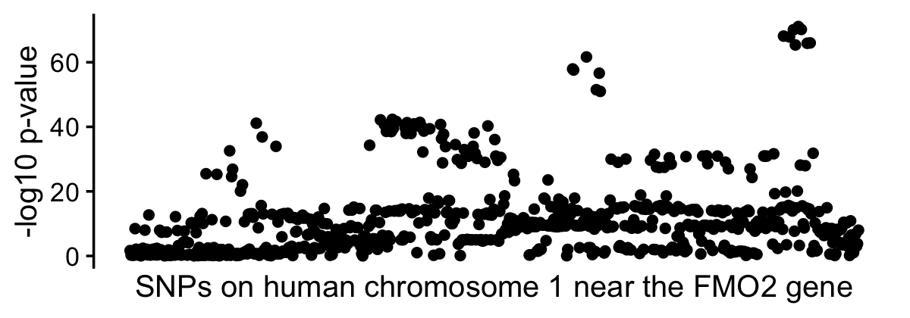
| Version | Author | Date |
|---|---|---|
| 750d41b | Peter Carbonetto | 2026-07-23 |
There are several “clusters” of SNPs that have very low p-values. This clustering is typical due to strong correlations (“LD”) between nearby SNPs. The fact that there are several clusters suggests that perhaps there is more than one SNP affecting the quantitative trait, but it is hard to say for sure based on an association analysis alone.
Let’s now run a SuSiE fine-mapping analysis using the same statistics that were used in the association tests—specifically, we will use the z-scores. (We will also eventually need \({\bf R}\), the \(p \times p\) matrix of correlations between all SNPs, also sometimes called the “LD matrix”.)
fit <- susie_rss(zhat,R,n = n,estimate_prior_method = "EM",
tol = 1e-8,min_abs_corr = 0)This is a function we will use in the code chunks below to visualize the results of the SuSiE fine-mapping analysis. Understanding how this function works is not important.
pip_plot <- function (fit, causal_snps = NULL, xlab = "") {
cs_colors <- c("dodgerblue","limegreen","darkorange")
pip <- fit$pip
n <- length(pip)
dat <- data.frame(pos = 1:n,pip = pip,CS = as.character(NA))
num_cs <- length(fit$sets$cs)
for (i in num_cs:1) {
j <- fit$sets$cs[[i]]
dat[j,"CS"] <- paste0("CS",i)
}
dat_cs <- subset(dat,!is.na(CS))
out <- ggplot(dat,aes(x = pos,y = pip)) +
geom_point() +
geom_point(data = dat_cs,shape = 1,size = 3,
mapping = aes(color = CS)) +
scale_x_continuous(breaks = NULL) +
scale_color_manual(values = cs_colors) +
labs(x = xlab,y = "PIP") +
theme_cowplot(font_size = 12)
if (!is.null(causal_snps)) {
dat_causal <- dat[causal_snps,]
out <- out + geom_point(data = dat_causal,color = "red")
}
return(out)
}One thing we did not show in the previous plot is that there are actually 2 “causal SNPs”—that is, 2 SNPs that affect the trait, shown as 2 red dots in the next plot. (This is a simulated quantitative trait, so we know the truth.)
causal_snps <- which(b_true != 0)
pip_plot(fit,causal_snps,
xlab = "SNPs on human chromosome 1 near the FMO2 gene")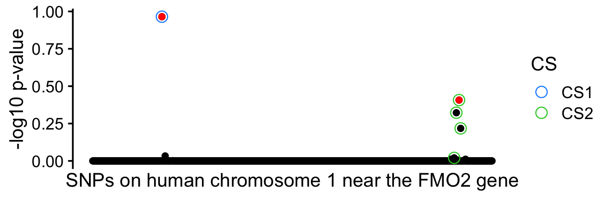
This plot is a “PIP plot”, where PIP = “posterior inclusion probability”. The PIPs weigh the support a SNP being a causal SNP, and indeed, the two causal SNPs have the highest PIPs. Each of the two credible sets (CSs) is meant to capture a causal SNP with high probability, and indeed in this example they do. And then the PIPs within each CS capture the uncertainty in which of the nearby SNPs is the true causal SNP. In CS2, several SNPs are strongly correlated with each other—the minimum correlation among the four SNPs in CS2 is 0.99—and so it difficult to say for sure which of these SNPs is the causal SNP. The PIPs in CS2 reflect this.
j <- fit$sets$cs$L1
min(R[j,j])
# [1] 0.9904513By contrast, in CS1 we are quite confident (PIP > 0.95) that the one SNP is causal.
To reinforce some of these points, it is helpful to compare the association analysis directly with the fine-mapping analysis:
p1 <- manhattan_plot(pval,causal_snps,
xlab = "SNPs on human chromosome 1 near the FMO2 gene")
p2 <- pip_plot(fit,causal_snps,
xlab = "SNPs on human chromosome 1 near the FMO2 gene")
plot_grid(p1,p2,nrow = 2,ncol = 1,align = "v",axis = "lr")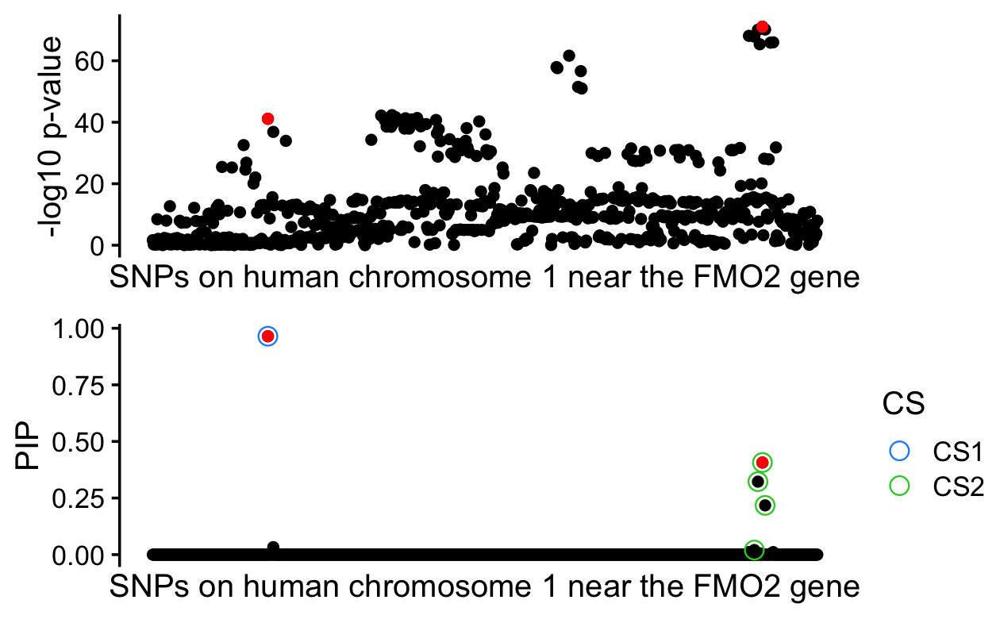
A goal of this tutorial is to gain some insight into how we arrived at this fine-mapping result and how SuSiE works. Starting with the case of a single causal SNP will be our first step toward that goal.
Assuming a single causal SNP simplifies things greatly because we can compute the PIPs and CS quite easily using the z-scores. Here we break down the analysis into three calculations: the calculation of the CS given the PIPs; the calculation of the PIPs given the Bayes factors (BFs); and the calculation of the BFs.
Computing the PIPs given the BFs is quite simple. If we assume the prior inclusion probabilities are the same for all SNPs, we have \[ \mathrm{PIP}_j = \frac{\mathrm{BF}_j}{\sum_{j'=1}^p \mathrm{BF}_{j'}}. \] This function performs this calculation in a numerically stable way given the log-BFs:
normalizelogweights <- function (logw) {
x <- max(logw)
w <- exp(logw - x)
return(w/sum(w))
}This function returns a CS given the PIPs:
get_cs <- function (pip, coverage = 0.95) {
i <- order(pip,decreasing = TRUE)
n <- which(cumsum(pip[i]) > coverage)[1]
return(i[1:n])
}The Bayes factor for each SNP \(j\) is a ratio of two likelihoods comparing a “single-SNP model” of the quantitative trait \(\boldsymbol{y}\) against a “null model” in which no SNP affects the trait. In most of our analyses the single-SNP model for each SNP \(j\) is a simple linear regression in which the prior distribution for the unknown coefficient \(b_j\) is a normal distribution centered at zero (for simplicity I’ll assume the residual variance is 1, which is an assumption we will make later on anyhow): \[ \begin{aligned} \boldsymbol{y} \mid b_j &\sim N_n(\boldsymbol{x}_j b_j, 1) \\ b_j \mid \sigma_0^2 &\sim N(0, \sigma_0^2) \end{aligned} \]
A key idea is this single-SNP model can be reframed as a model of the z-score obtained from the association test: \[ \begin{aligned} z_j &\sim N(\sqrt{n} b_j, 1) \\ b_j &\sim N(0, \sigma_0^2). \end{aligned} \] Therefore, the BF calculation can be expressed as a comparison of two models of the z-scores: \[ \begin{aligned} \mathrm{BF}_j &= \frac{p(\boldsymbol{y} \mid \boldsymbol{x}_j, b_j \neq 0)} {p(\boldsymbol{y} \mid \boldsymbol{x}_j, b_j = 0)} \\ &= \frac{p(z_j \mid b_j \neq 0)} {p(z_j \mid b_j = 0)} \\ &\propto \exp\bigg\{ \frac{z_j^2}{2} \times \frac{\tilde{\sigma}_0^2}{\tilde{\sigma}_0^2 + 1} \bigg\}, \\ \end{aligned} \] where \(\tilde{\sigma}_0^2 := n \sigma_0^2\). The following function implements the BF calculation for all SNPs. (It also computes the posterior mean effect estimates \(b_{j1} := E[b_j \mid z_j, \sigma_0^2]\) which we do not need immediately, but we will need later on.)
compute_log_bf <- function (z, s0) {
s0 <- n * s0
lbf <- z^2/2 * s0/(s0 + 1)
b1 <- z/(1 + 1/s0)
return(list(lbf = lbf,b1 = b1))
}Compare to eq. A.3 of the SuSiE paper and eq. 17 of the SuSiE-RSS paper.
Let’s now perform these calculations on the example data set:
s0 <- 0.36
z <- sqrt(n/(n + zhat^2)) * zhat
lbf <- compute_log_bf(z,s0)$lbf
pip <- normalizelogweights(lbf)
cs <- get_cs(pip)
pip_plot(list(pip = pip,sets = list(cs = list(L1 = cs))),causal_snps,
xlab = "SNPs on human chromosome 1 near the FMO2 gene")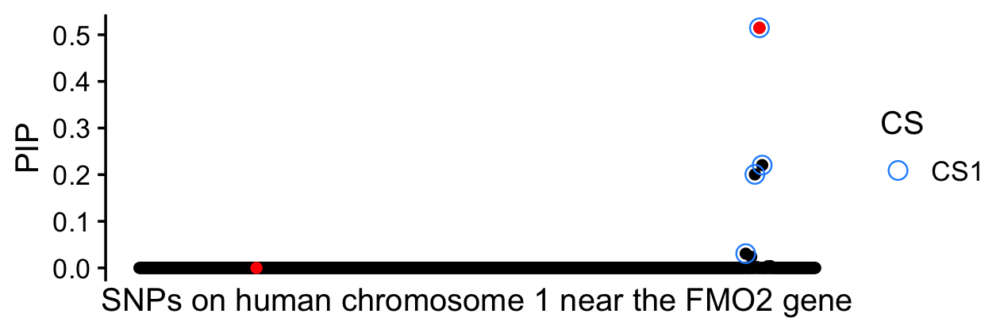
| Version | Author | Date |
|---|---|---|
| 3075e9f | Peter Carbonetto | 2026-07-30 |
Note that we adjusted the z-scores in the same way as in
susie_rss(). See the SuSiE-RSS paper for an explanation of
why this is done.
(Note that the prior variance setting of 0.36 here was mainly chosen
to match the estimate obtained by running susie_rss(), and
the particular choice is not critical.)
Not surprisingly, because we assumed 1 causal SNP, the CS captures only one of the two causal SNPs. Despite this failure, we still made some progress by reusing the association tests to perform fine-mapping (that is, we computed a CS and a PIP for each SNP).
A quick verification that these calculations match the
susie_rss() result:
par(mar = c(4,4,2,1))
fit_1cs <- susie_rss(zhat,R,n = n,L = 1,estimate_prior_method = "EM",
tol = 1e-6)
plot(fit_1cs$pip,pip,pch = 20,xlab = "susie_rss PIP",ylab = "JSM tutorial PIP")
abline(a = 0,b = 1,lty = "dotted",col = "magenta")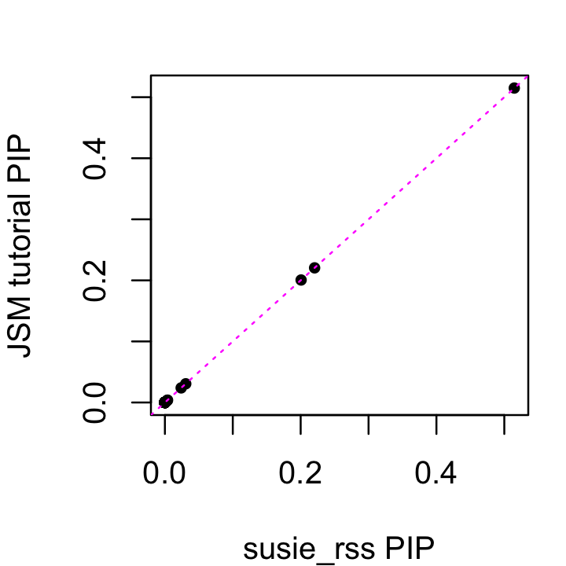
Here we will show that we can reuse previous Bayes factor and PIP calculations above to make perform the necessary inferences for more than one causal SNP. In this example we will consider the case of \(L = 2\) causal SNPs, but the implementation provided here works for any number of causal SNPs.
To explain how this works, we first formalize the ideas from the previous section as a model which we call the “single effect regression” (SER) model. This is a model in which exactly 1 of the \(p\) candidate SNPs affects the trait, and the choice of SNP \(j\) is probabilistic, drawn uniformly at random from the pool of \(p\) candidate SNPs. The SER in summary statistics form is \[ \begin{aligned} \boldsymbol{z} \mid b_j &\sim N_p(\sqrt{n} b_j, 1) \\ \gamma = j &\sim \textstyle \mathrm{Multinom}\big(1, (\frac{1}{p}, \ldots, \frac{1}{p})\big) \\ b_j \mid \sigma_0^2 &\sim N(0, \sigma_0^2). \\ \end{aligned} \] The posterior distribution of \(b\) under this SER model is a weighted mixture of normals in which the weights are the PIPs. For example, the posterior mean of each \(b_j\) is simply \[ \bar{b}_j = \mathrm{PIP}_j b_{1j}. \]
To describe the algorithm, we use \(\mathrm{SER}(\boldsymbol{z}, \sigma_0^2)\) as shorthand for the posterior distribution of \(\boldsymbol{b} := (b_1, \ldots, b_p)\) given \(\boldsymbol{z}, \sigma_0^2\) under the SER model. Using the SER model, we define the solution fine-mapping analysis with \(L\) causal SNPs as follows: it is an iterative solution obtained by repeatedly fitting \(L\) SERs in which each SER is fit to the residuals obtained by removing the effects of the other \(L - 1\) SERs. This involves repeating the following steps for each \(l = 1, \ldots, L\):
Compute the residuals obtained by removing the effects of the other SERs, \(\boldsymbol{r}_l = \boldsymbol{z} - {\bf R} \sum_{l' \neq l} \bar{\boldsymbol{b}}^{(l')}\), where \(\bar{\boldsymbol{b}}^{(l)}\) denotes the posterior mean of the coefficients \(\boldsymbol{b}\) from the \(l\)th the SER.
Compute the posterior distribution for the \(l\)th SER model fit to the residuals from Step 1, \(\mathrm{SER}(\boldsymbol{r}_l, \sigma_{0l}^2)\), then compute PIPs, CS and the posterior mean of \(\boldsymbol{b}\).
Notice that the LD matrix \({\bf R}\) is only used in Step 1.
This iterative algorithm is called the IBSS algorithm, short for “iterative Bayesian stepwise selection”. The following function repeats Steps 1 and 2 “numiter” times for each of the \(L\) SERs:
ibss <- function (z, R, n, L, s0, numiter, coverage = 0.95) {
p <- length(zhat)
PIP <- matrix(0,p,L)
B1 <- matrix(0,p,L)
r <- z
residuals <- matrix(0,p,L)
for (iter in 1:numiter) {
for (l in 1:L) {
b1 <- B1[,l]
r <- r + R %*% b1
residuals[,l] <- r
out <- compute_log_bf(r,s0[l])
pip <- normalizelogweights(out$lbf)
b1 <- out$b1 * pip
r <- r - R %*% b1
PIP[,l] <- pip
B1[,l] <- b1
}
}
return(list(pip = rowSums(PIP),
residuals = residuals,
sets = list(cs = apply(PIP,2,function (x) get_cs(x,coverage)))))
}For background and detailed derivations, see the SuSiE-RSS paper.
Also compare this description of the IBSS algorithm and the
ibss() R function to Algorithm 1 in the SuSiE-RSS
paper.
Let’s now apply the IBSS algorithm to the z-scores and LD matrix, with \(L = 2\):
res <- ibss(z,R,n,L = 2,s0 = c(0.3,0.2),numiter = 10)The prior variances were chosen to match the estimated obtained by
running susie_rss().
Indeed, this result is nearly the same as the original result we obtained from running SuSiE-RSS:
pip_plot(res,causal_snps,
xlab = "SNPs on human chromosome 1 near the FMO2 gene")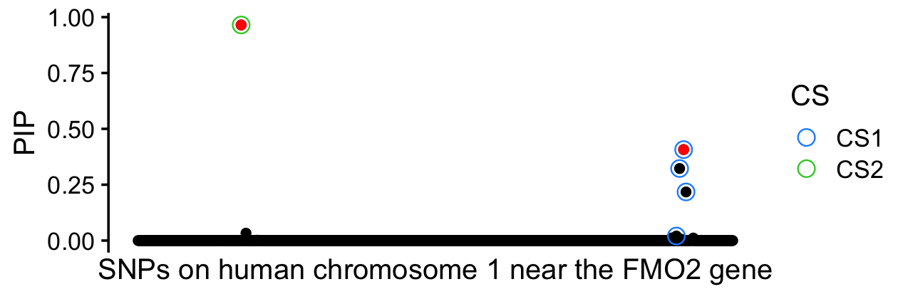
| Version | Author | Date |
|---|---|---|
| 3075e9f | Peter Carbonetto | 2026-07-30 |
And:
par(mar = c(4,4,2,1))
plot(fit$pip,res$pip,pch = 20,xlab = "susie_rss PIP",
ylab = "JSM tutorial PIP")
abline(a = 0,b = 1,lty = "dotted",col = "magenta")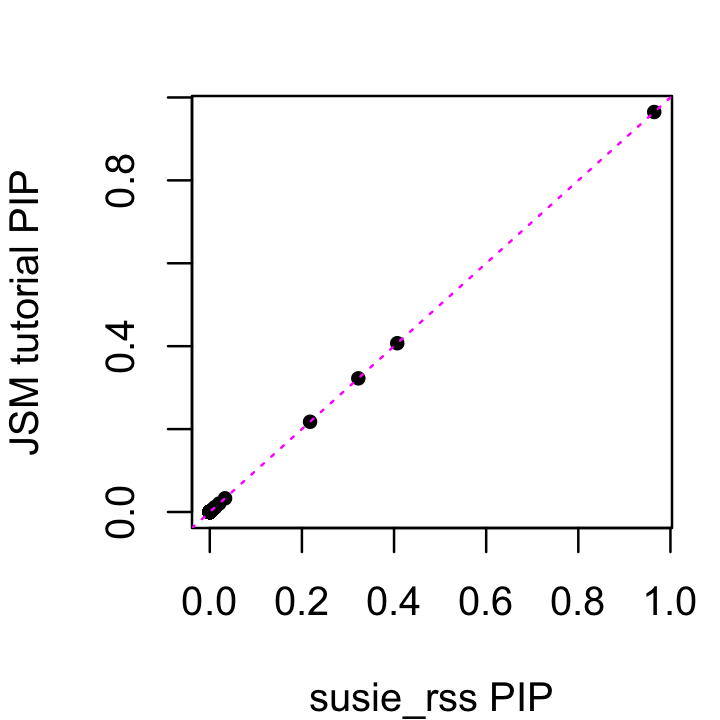
| Version | Author | Date |
|---|---|---|
| 3075e9f | Peter Carbonetto | 2026-07-30 |
To gain some a little more insight into what the IBSS algorithm is doing, it is helpful to see what are the data that are actually being used to fit the SERs.
residuals_plot <- function (fit, z, R, l, cs_color = "black") {
ld_colors <- c("darkblue","dodgerblue","limegreen","orange","red")
L <- length(fit$sets$cs)
l1 <- setdiff(1:L,l)[1]
cs <- fit$sets$cs[[l1]]
i <- cs[which.max(fit$pip[cs])]
dat <- data.frame(z = z,
res = fit$residuals[,l],
cor = abs(R[,i]))
dat <- transform(dat,cor = cut(cor,seq(0,1,length.out = 6)))
dat_cs <- dat[cs,]
return(ggplot(dat,aes(x = z,y = res,color = cor)) +
geom_point() +
geom_point(data = dat_cs,shape = 1,size = 3,color = cs_color) +
geom_abline(intercept = 0,slope = 1,color = "black",
linetype = "dotted") +
scale_color_manual(values = ld_colors) +
labs(x = "z-score",y = "residual") +
theme_cowplot(font_size = 12))
}This scatterplot compares the z-scores to the residuals that were used to fit the second SER after removing the posterior mean effects of the first SER:
residuals_plot(res,z,R,l = 2)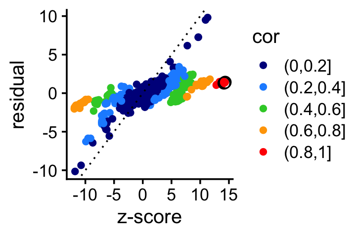
| Version | Author | Date |
|---|---|---|
| 7f22e27 | Peter Carbonetto | 2026-07-31 |
From this plot we see not only that the large z-scores corresponding to the SNPs in the CS1 (black circles) get “shrunk” toward zero, but the z-scores for SNPs strongly correlated with CS1 also get shrunk toward zero. This has the effect of focussing the second SER on the remaining large z-scores.
Likewise, when we re-fit the first SER, the z-scores in CS2 as well as the z-scores correlated with the SNP in CS2 are also strongly shrunk toward zero:
residuals_plot(res,z,R,l = 1)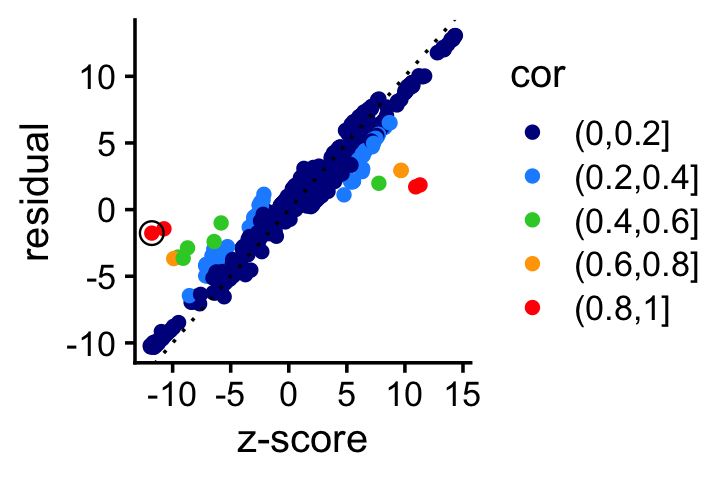
| Version | Author | Date |
|---|---|---|
| 7f22e27 | Peter Carbonetto | 2026-07-31 |
It is common to use an LD matrix that was computed using a differnet sample than what was used to perform the association tests. Since R is used in computing the residuals, it follows that the “wrong” LD matrix could result in the “wrong” residuals.
To understand the implications, let’s re-run the fine-mapping with \(L = 3\), with the correct (“in-sample”) LD matrix, and an “out-of-sample” LD matrix:
res_in <- ibss(z,R,n,L = 3,s0 = rep(0.3,3),numiter = 10)
res_out <- ibss(z,R_out,n,L = 3,s0 = rep(0.3,3),numiter = 10)
p1 <- pip_plot(res_in,causal_snps,
xlab = "SNPs on human chromosome 1 near the FMO2 gene")
p2 <- pip_plot(res_out,causal_snps,
xlab = "SNPs on human chromosome 1 near the FMO2 gene")
plot_grid(p1,p2,nrow = 2,ncol = 1)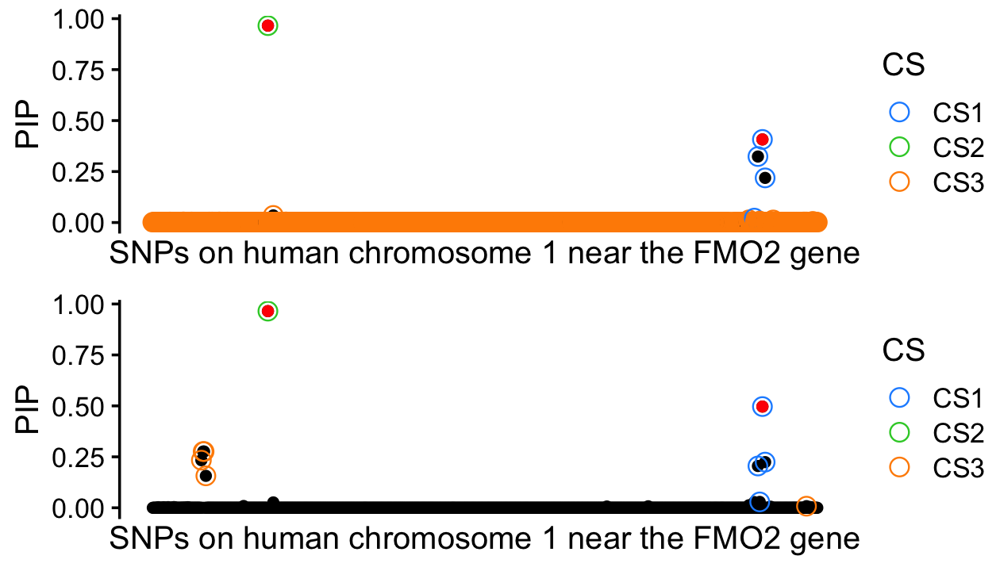
| Version | Author | Date |
|---|---|---|
| 7f22e27 | Peter Carbonetto | 2026-07-31 |
With the in-sample LD, the third CS is effectively a “dummy” CS that
captures most of the candidate SNPs because there isn’t enough
information to narrow down the signal to a small number of SNPs. The
susie_rss() function can automatically prune such “weakly
informative” SERs.
With the out-of-sample LD, however, the third CS captures a “ghost” causal SNP; that is, the third CS is a false positive. Let’s look at the residuals again to understand why this happens.
As before, let’s look at the residuals to understand what is going on.
another_residuals_plot <- function (fit, z, l, cs_color = "red",
title = "") {
cs <- fit$sets$cs[[l]]
dat <- data.frame(z = z,res = fit$residuals[,l])
dat_cs <- dat[cs,]
zmin <- with(dat,min(c(z,res)))
zmax <- with(dat,max(c(z,res)))
return(ggplot(dat,aes(x = z,y = res)) +
geom_point() +
geom_point(data = dat_cs,shape = 1,size = 3,color = cs_color) +
geom_abline(intercept = 0,slope = 1,color = "magenta",
linetype = "dotted") +
xlim(zmin,zmax) +
ylim(zmin,zmax) +
labs(x = "z-score",y = "residual",title = title) +
theme_cowplot(font_size = 12) +
theme(plot.title = element_text(face = "plain",size = 12)))
}The data for the first SER look quite similar:
p1 <- another_residuals_plot(res_in,z,l = 1,title = "in-sample LD")
p2 <- another_residuals_plot(res_out,z,l = 1,title = "out-of-sample LD")
plot_grid(p1,p2,nrow = 1,ncol = 2)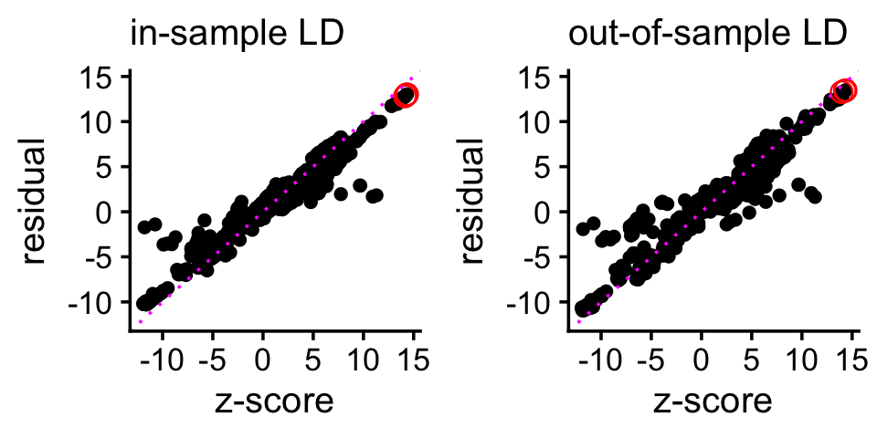
Same for the second SER:
p1 <- another_residuals_plot(res_in,z,l = 2,title = "in-sample LD")
p2 <- another_residuals_plot(res_out,z,l = 2,title = "out-of-sample LD")
plot_grid(p1,p2,nrow = 1,ncol = 2)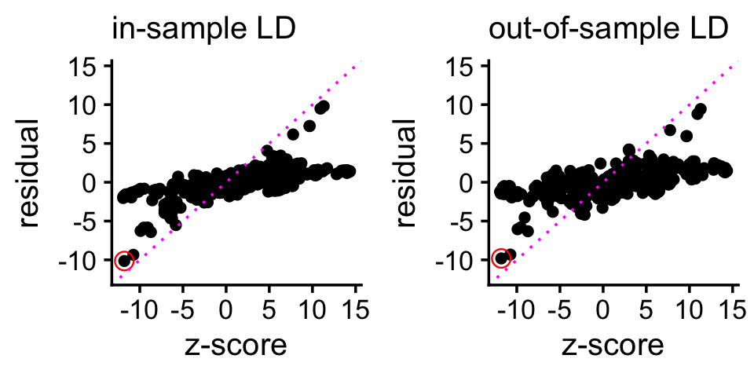
For the third SER, however, since most of the “signal” is gone, the out-of-sample LD matrix contributes a lot of error to the calculation of the residuals, and as a result SuSiE mistakenly thinks that there is a signal to be captured by a CS. This is the origin of the false positive CS.
p1 <- another_residuals_plot(res_in,z,l = 3,title = "in-sample LD")
p2 <- another_residuals_plot(res_out,z,l = 3,title = "out-of-sample LD")
plot_grid(p1,p2,nrow = 1,ncol = 2)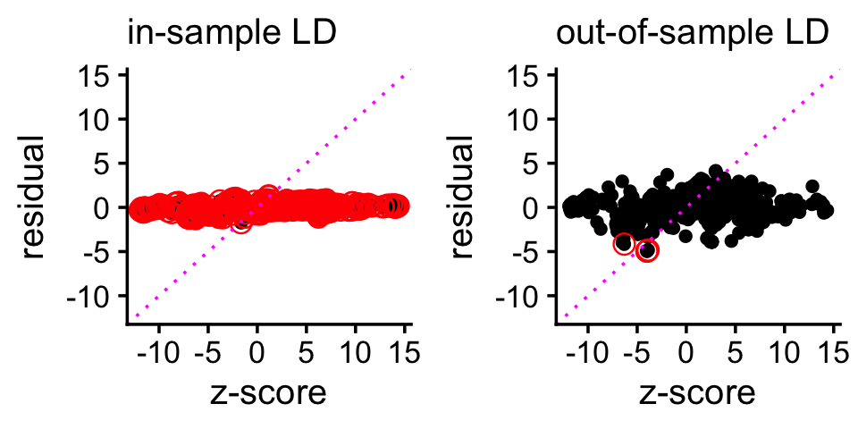
Multi-SNP regression likelihood: \[ \boldsymbol{y} \mid \boldsymbol{b}, \sigma^2 \sim N_n({\bf X} \boldsymbol{b}, \sigma^2 {\bf I}_n) \] Equivalent likelihood formulated using summary statistics: \[ \boldsymbol{t} \mid {\bf R}, n, \tilde{\boldsymbol{b}}, \sigma^2 \sim N_p(\sqrt{n} {\bf R} \tilde{\boldsymbol{b}}, \sigma^2{\bf R}) \] With a few additional assumptions, we get the RSS likelihood (the \(\tilde{\boldsymbol{z}}\) are “lightly modified” z-scores): \[ \tilde{\boldsymbol z} \mid {\bf R}, n, {\boldsymbol b}, \sigma^2 \sim N_p(\sqrt{n} {\bf R} \boldsymbol b, \sigma^2{\bf R}) \] See also eq. 22 in the SuSiE-RSS paper.
Wang et al (2020). A simple new approach to variable selection in regression, with application to genetic fine mapping. Journal of the Royal Statistical Society, Series B 82, 1273-1300. link
Zou et al (2022). Fine-mapping from summary data with the Sum of Single Effects model. PLoS Genetics 18, e1010299. link
sessionInfo()
# R version 4.3.3 (2024-02-29)
# Platform: aarch64-apple-darwin20 (64-bit)
# Running under: macOS 26.5.2
#
# Matrix products: default
# BLAS: /System/Library/Frameworks/Accelerate.framework/Versions/A/Frameworks/vecLib.framework/Versions/A/libBLAS.dylib
# LAPACK: /Library/Frameworks/R.framework/Versions/4.3-arm64/Resources/lib/libRlapack.dylib; LAPACK version 3.11.0
#
# locale:
# [1] en_US.UTF-8/en_US.UTF-8/en_US.UTF-8/C/en_US.UTF-8/en_US.UTF-8
#
# time zone: America/Chicago
# tzcode source: internal
#
# attached base packages:
# [1] stats graphics grDevices utils datasets methods base
#
# other attached packages:
# [1] susieR_0.14.4 cowplot_1.1.3 ggplot2_3.5.2
#
# loaded via a namespace (and not attached):
# [1] sass_0.4.10 generics_0.1.4 stringi_1.8.7
# [4] lattice_0.22-5 digest_0.6.37 magrittr_2.0.3
# [7] evaluate_1.0.4 grid_4.3.3 RColorBrewer_1.1-3
# [10] fastmap_1.2.0 rprojroot_2.0.4 workflowr_1.7.1
# [13] plyr_1.8.9 jsonlite_2.0.0 Matrix_1.6-5
# [16] whisker_0.4.1 reshape_0.8.9 mixsqp_0.3-54
# [19] promises_1.3.3 scales_1.4.0 jquerylib_0.1.4
# [22] cli_3.6.5 rlang_1.1.6 crayon_1.5.3
# [25] withr_3.0.2 cachem_1.1.0 yaml_2.3.10
# [28] parallel_4.3.3 tools_4.3.3 dplyr_1.1.4
# [31] httpuv_1.6.14 RcppZiggurat_0.1.6 Rfast_2.1.0
# [34] vctrs_0.6.5 R6_2.6.1 matrixStats_1.2.0
# [37] lifecycle_1.0.4 git2r_0.33.0 stringr_1.5.1
# [40] fs_1.6.6 irlba_2.3.5.1 pkgconfig_2.0.3
# [43] RcppParallel_5.1.10 pillar_1.11.0 bslib_0.9.0
# [46] later_1.4.2 gtable_0.3.6 glue_1.8.0
# [49] Rcpp_1.1.0 xfun_0.52 tibble_3.3.0
# [52] tidyselect_1.2.1 knitr_1.50 dichromat_2.0-0.1
# [55] farver_2.1.2 htmltools_0.5.8.1 rmarkdown_2.29
# [58] labeling_0.4.3 compiler_4.3.3